D'après le programme officiel tunisien (Thème 1, Partie II), ce chapitre vise à :
1 Expliquer comment se fait la dégradation du glucose dans la cellule.
2 Identifier les ultrastructures cellulaires et les molécules impliquées.
3 Préciser sous quelle forme est produite l'énergie et utilisée par la cellule.
📚 Situation Problème (p.73)
La croissance et l'activité physique nécessitent de l'énergie. Les cellules utilisent le glucose comme principale source d'énergie. Leur dégradation exige une consommation d'O₂ proportionnelle à l'énergie produite.
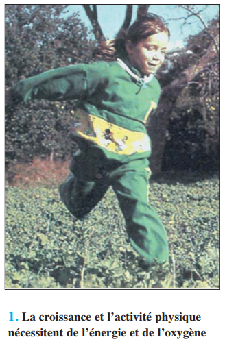
📷 Doc.1 — Athlète en plein effort · La croissance et l'activité physique nécessitent de l'énergie et de l'oxygène (p.73)
'">
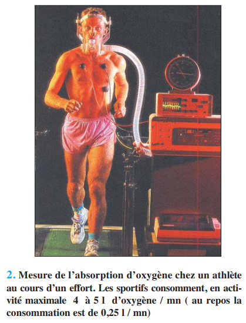
📷 Doc.2 — Mesure de l'absorption d'oxygène chez un athlète au cours d'un effort (p.73)
'">
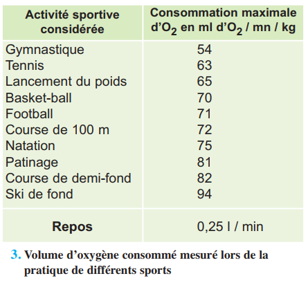
📷 Doc.3 — Tableau : Consommation maximale d'O₂ pour différents sports (Gymnastique, Tennis, Ski de fond…) (p.74)
'">
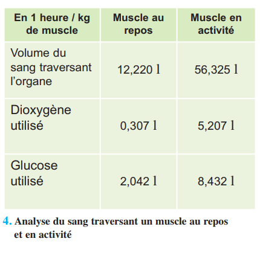
📷 Doc.4 — Tableau : Comparaison muscle au repos / muscle en activité (volume sang, O₂, glucose utilisés) (p.74)'">
📚 Préacquis (p.74-75)
La respiration se manifeste par des échanges gazeux : absorption d'O₂ et rejet de CO₂. Le dioxygène est transporté par l'hémoglobine jusqu'aux cellules où les nutriments sont dégradés.
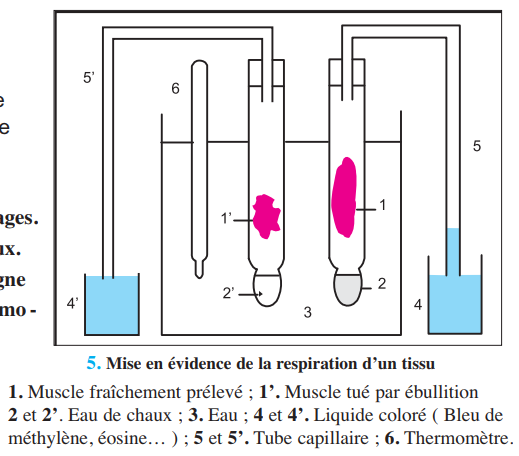
📷 Doc.5 — Schéma de l'expérience de mise en évidence de la respiration d'un tissu (muscle frais vs bouilli, eau de chaux, thermomètre) (p.75)
'">
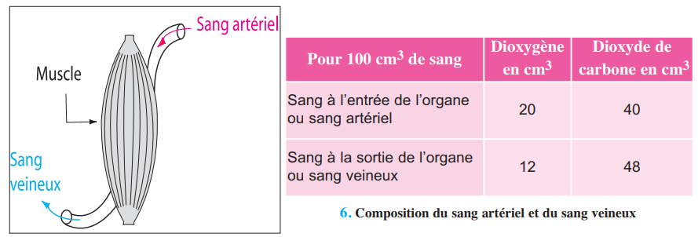
📷 Doc.6 — Tableau : Composition du sang à l'entrée (artériel) et à la sortie (veineux) d'un organe (p.75)'">
✏️ Mini-quiz — Préacquis
1. Le sang artériel est et le sang veineux est .
❓ 3 Questions directrices (p.74)
Comment se fait la dégradation du glucose dans la cellule ?
Quels sont les ultrastructures et molécules impliquées ?
Sous quelle forme l'énergie est-elle produite et utilisée ?
🧠 Comprendre avant de mémoriser
La respiration cellulaire est une dégradation complète du glucose en présence d'O₂. Elle se déroule en trois grandes étapes : la glycolyse dans le hyaloplasme (anaérobie), le cycle de Krebs dans la matrice mitochondriale et la chaîne respiratoire sur les crêtes. L'énergie libérée est stockée sous forme d'ATP (36 molécules par glucose). En absence d'O₂, la cellule peut recourir à la fermentation lactique, beaucoup moins énergétique.
Clique sur chaque notion · Pièges CAPES et connexions révélés
🍬
Glycolyse
Hyaloplasme·anaérobie
🔄
Krebs
Matrice mitochondriale
⛓️
Chaîne
Crêtes·O₂→H₂O
⚡
ATP
36/glucose
🏃
Fermentation
Anaérobie·lactique
🍬 Glycolyse (hyaloplasme)
La glycolyse dégrade 1 glucose (C6) en 2 acides pyruviques (C3). C'est une étape anaérobie (ne consomme pas d'O₂). Elle produit 2 ATP et des transporteurs réduits TH₂.
🔄 Cycle de Krebs (matrice)
L'acide pyruvique pénètre dans la mitochondrie. Il subit des décarboxylations (→ CO₂) et des déshydrogénations (→ H₂ capté par transporteurs). Bilan : 2 ATP + CO₂ + transporteurs réduits.
⛓️ Chaîne respiratoire (crêtes)
Les transporteurs réduits sont régénérés au niveau des crêtes. L'O₂ est l'accepteur final d'électrons et de protons → H₂O. Cette étape produit 32 ATP, l'essentiel de l'énergie.
⚡ ATP — Monnaie énergétique
Bilan global par glucose : 36 ATP (2 glycolyse + 2 Krebs + 32 chaîne). L'ATP est un transporteur d'énergie chimique, PAS une réserve. Cycle ATP ⇄ ADP + Pi.
🏃 Fermentation lactique
En absence d'O₂, l'acide pyruvique → acide lactique. Cette voie ne produit que 2 ATP (issus de la glycolyse). Elle explique la dette d'oxygène après un effort intense.
⚠️ 3 Pièges du CAPES
⚠️ Ne pas confondre respiration pulmonaire et respiration cellulaire ▼
La respiration pulmonaire = échanges gazeux (O₂/CO₂) au niveau des poumons. La respiration cellulaire = dégradation du glucose dans les mitochondries avec production d'ATP. Deux phénomènes distincts.
⚠️ L'ATP n'est PAS une réserve d'énergie ▼
L'ATP est un transporteur d'énergie chimique utilisable immédiatement. Les vraies réserves sont le glycogène (animaux) et l'amidon (végétaux). L'ATP est constamment hydrolysé et resynthétisé (cycle ATP/ADP).
⚠️ Le cycle de Krebs ne consomme PAS directement d'O₂ ▼
L'O₂ intervient uniquement à la fin de la chaîne respiratoire comme accepteur final d'électrons pour former H₂O. Le cycle de Krebs se déroule sans O₂ — il produit CO₂ et des transporteurs réduits.
🔗 Connexions
← Ch.3 — Digestion
Les nutriments (glucose) absorbés au Ch.3 sont ici dégradés pour produire de l'énergie.
→ Ch.7-8 — Milieu Intérieur
L'O₂ et le glucose sont transportés par le sang. La constance du milieu intérieur est essentielle à la respiration.
💭 Réflexion
1. Pourquoi un athlète consomme-t-il jusqu'à 20 fois plus d'O₂ pendant un effort intense ?
L'effort intense nécessite plus d'ATP pour la contraction musculaire. Cette ATP est produite par la respiration cellulaire qui consomme de l'O₂ au niveau de la chaîne respiratoire. Plus d'énergie = plus de respiration = plus d'O₂ consommé.
🔬 Activité 1 — La Respiration Cellulaire (p.76-78)
1A — Origine du CO₂ et de l'H₂O (p.76)
La réaction globale : C₆H₁₂O₆ + 6O₂ → 6CO₂ + 6H₂O + Énergie. Pour déterminer l'origine des produits, on utilise des marqueurs isotopiques (¹⁴C, ¹⁸O).
Expérience
Résultat
Conclusion
Glucose marqué au ¹⁴C
Le CO₂ rejeté est radioactif
Le CO₂ provient du glucose
Oxygène marqué ¹⁸O₂
L'eau produite est radioactive, pas le CO₂
L'O₂ respiratoire sert à former H₂O
🔍 Conclusion : Le CO₂ provient de la décarboxylation du glucose. L'O₂ respiratoire est utilisé pour former H₂O (et non CO₂).
✏️ Mini-quiz 1A
1. Le CO₂ provient .
1B — Mise en évidence de la déshydrogénation (p.76-77)
Le bleu de méthylène (Bm) est un indicateur coloré : bleu à l'état oxydé, incolore à l'état réduit (BmH₂). Sa décoloration met en évidence une réaction de déshydrogénation.
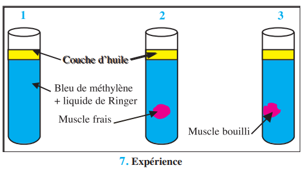
📷 Doc.7 — Schéma de l'expérience de déshydrogénation : 3 tubes (Ringer + bleu de méthylène + huile) avec ou sans muscle frais/bouilli (p.76)
'">
Tube
Contenu
Résultat
Conclusion
1
Ringer + Bm (témoin)
Bleu
Pas de réaction
2
Ringer + muscle frais + Bm
Décoloration
Le muscle libère H₂ → réduit Bm
3
Ringer + muscle bouilli + Bm
Bleu
La chaleur détruit l'activité
✏️ Mini-quiz 1B
1. La décoloration du bleu de méthylène indique .
1C — Des enzymes respiratoires (p.77-78)
Les réactions de décarboxylation et de déshydrogénation sont catalysées par des enzymes spécifiques (protéines thermosensibles).
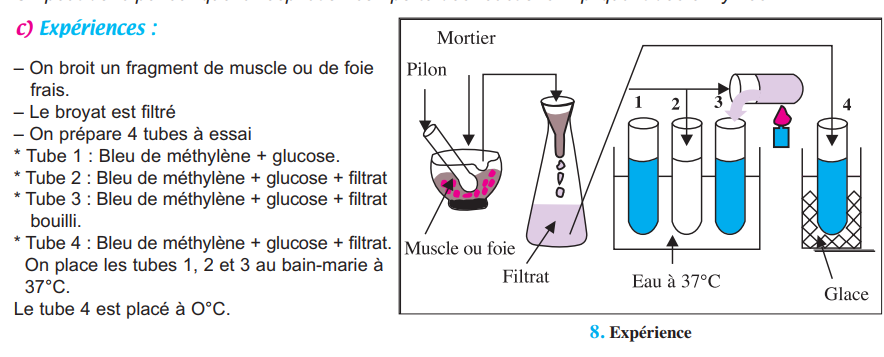
📷 Doc.8 — Schéma de l'expérience avec filtrat de broyat : 4 tubes à 37°C et 0°C avec bleu de méthylène et glucose (p.77)
'">
Tube
Contenu
T°
Décoloration
1
Bm + glucose (témoin)
37°C
Non (–)
2
Bm + glucose + filtrat
37°C
Oui (+)
3
Bm + glucose + filtrat bouilli
37°C
Non (–)
4
Bm + glucose + filtrat
0°C
Non (–)
🔍 Conclusion : Le filtrat contient des enzymes. Chauffé (tube 3) → dénaturation irréversible. À 0°C (tube 4) → inactivation réversible.
✏️ Mini-quiz 1C
1. Le tube 3 (filtrat bouilli) ne décolore pas car .
⚙️ Activité 2 — La Mitochondrie, Usine Cellulaire (p.78-81)
2A — Mise en évidence (p.78-79)
Les cellules très actives (hépatiques, musculaires) ont de nombreuses mitochondries. En milieu aérobie, elles sont développées ; en anaérobie, rares.
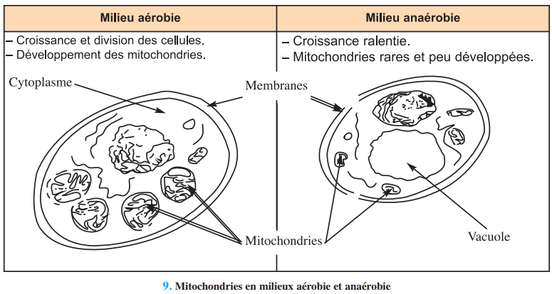
📷 Doc.9 — Comparaison cellule en milieu aérobie (mitochondries développées) vs anaérobie (mitochondries rares) (p.78)
'">
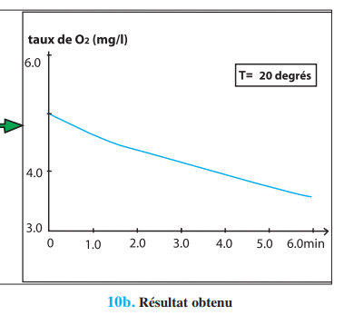
📷 Doc.10b — Graphique : variation du taux d'O₂ dans le milieu après ajout de mitochondries isolées (p.79)
'">
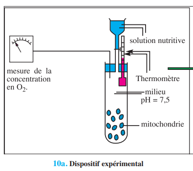
📷 Doc.10a — Schéma du dispositif expérimental pour mesurer la consommation d'O₂ par des mitochondries isolées (p.79)'">
✏️ Mini-quiz 2A
1. Les mitochondries isolées en milieu aérobie .
2B — Quel est le métabolite dégradé ? (p.79-80)
Le glucose n'est PAS dégradé directement dans la mitochondrie. C'est l'acide pyruvique (C3), issu de la glycolyse, qui y pénètre et y est dégradé.
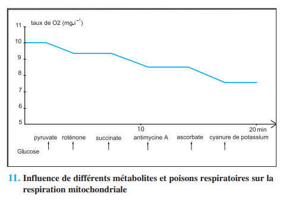
📷 Doc.11 — Graphique : influence de différents métabolites (succinate, pyruvate) et poisons (roténone, cyanure) sur la consommation d'O₂ par les mitochondries (p.80)
'">
Condition
Produits
Énergie
Mitochondries + ac. pyruvique + O₂
CO₂ + H₂O
1100 kJ
Mitochondries + ac. pyruvique SANS O₂
CO₂ + alcool
61 kJ
✏️ Mini-quiz 2B
1. Le métabolite dégradé dans la mitochondrie est .
2C — Ultrastructure de la mitochondrie (p.81)
La mitochondrie possède : membrane externe (40% lipides), membrane interne avec crêtes (80% protéines, enzymes de la chaîne respiratoire), matrice (enzymes du cycle de Krebs).
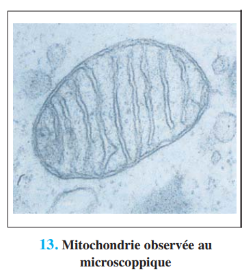
📷 Doc.13 — Photographie/observation microscopique d'une mitochondrie (p.81)
'">
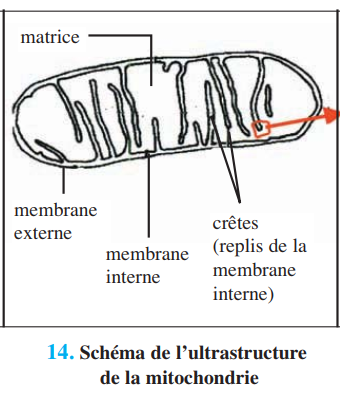
📷 Doc.14 — Schéma 3D de l'ultrastructure de la mitochondrie (membrane externe, interne, crêtes, matrice) (p.81)
'">
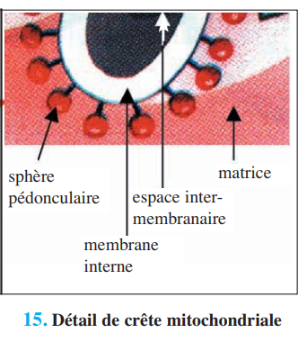
📷 Doc.15 — Schéma de détail d'une crête mitochondriale avec les chaînes respiratoires (p.81)
'">
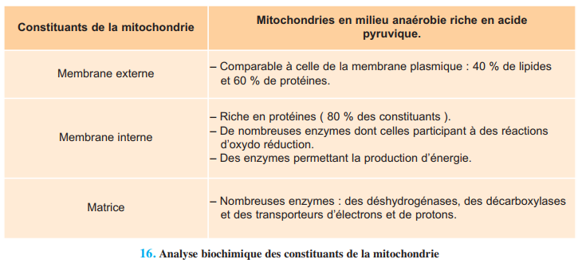
📷 Doc.16 — Tableau : Analyse biochimique des constituants de la mitochondrie (membrane externe, interne, matrice) (p.81)'">
🧪 Activité 3 — Étapes de la Dégradation du Glucose (p.82-83)
Le voyage du glucose étape par étape
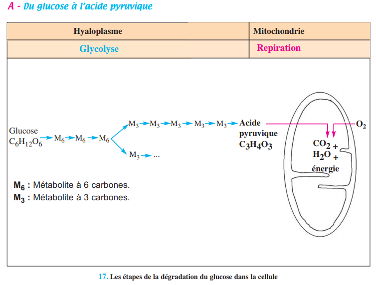
📷 Doc.17 — Schéma général simplifié : Les étapes de la dégradation du glucose dans la cellule (Hyaloplasme → Glycolyse ; Mitochondrie → Respiration) (p.82)
'">
Dans le hyaloplasme, la glycolyse transforme 1 glucose (C6) en 2 acides pyruviques (C3) via 9 réactions enzymatiques. Cette étape est anaérobie et produit 2 ATP.
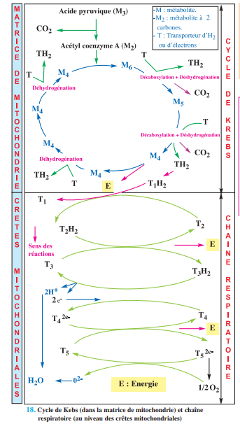
📷 Doc.18 — Schéma détaillé du Cycle de Krebs (dans la matrice) et de la Chaîne Respiratoire (sur les crêtes). Document central du chapitre (p.83)
'">
Dans la mitochondrie : l'acide pyruvique entre dans le cycle de Krebs (matrice) → décarboxylations (CO₂) + déshydrogénations (transporteurs réduits). La chaîne respiratoire (crêtes) régénère les transporteurs, utilise l'O₂ pour former H₂O et produit 34 ATP.
🔍 Bilan global : 1 glucose → 2 ATP (glycolyse) + 2 ATP (Krebs) + 32 ATP (chaîne) = 36 ATP.
✏️ Mini-quiz 3
1. La glycolyse se déroule dans .
2. Le cycle de Krebs se déroule dans .
3. La chaîne respiratoire est localisée sur .
⚡ Activité 4 — L'ATP, la Monnaie Énergétique (p.84-86)
4A — Problème et mise en évidence (p.84-85)
Lors de la dégradation du glucose, une partie de l'énergie est dissipée en chaleur, mais la majeure partie est stockée dans l'ATP (adénosine triphosphate).
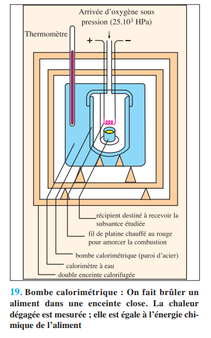
📷 Doc.19 — Photo/schéma d'une bombe calorimétrique (p.84)
'">
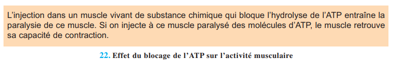
📷 Doc.22 — Schéma du dispositif expérimental : injection d'un bloqueur d'ATP dans un muscle → paralysie ; injection d'ATP → récupération (p.85)
'">
L'injection d'une substance qui bloque l'hydrolyse de l'ATP paralyse le muscle. L'injection d'ATP au muscle paralysé rétablit la contraction → preuve du rôle énergétique de l'ATP.
✏️ Mini-quiz 4A
1. Le blocage de l'hydrolyse de l'ATP entraîne .
4B — Structure et cycle de l'ATP (p.85-86)
L'ATP : Adénine (base azotée) + Ribose (sucre à 5C) + 3 groupements phosphate (P~P~P). Les liaisons ~ sont riches en énergie.
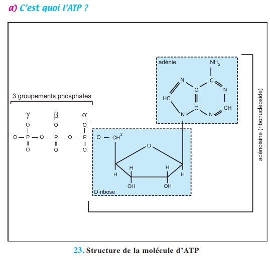
📷 Doc.23 — Schéma simplifié de la structure de l'ATP (Adénine - Ribose - P~P~P) (p.85)
'">
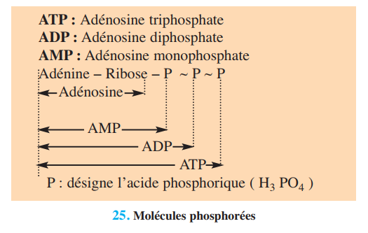
📷 Doc.25 — Schéma comparatif AMP, ADP, ATP (p.86)
'">
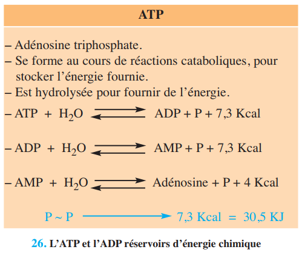
📷 Doc.26 — Schéma illustrant les liaisons riches en énergie (~) et la libération d'énergie par hydrolyse (p.86)
📷 Doc.24 — Vue 3D ou formule développée détaillée de l'ATP (p.85)'">
Cycle ATP/ADP : La respiration phosphoryle l'ADP en ATP (réaction endergonique). Le travail cellulaire hydrolyse l'ATP en ADP + Pi + 30,5 kJ (réaction exergonique).
✏️ Mini-quiz 4B
1. L'ATP est constitué d'adénine, ribose et .
2. L'hydrolyse de l'ATP est une réaction .
🏃 Activité 5 — La Fermentation Lactique (p.87)
La respiration cellulaire est-elle notre unique source d'énergie ?
Après un effort intense, on observe une dette d'oxygène : la consommation réelle d'O₂ est inférieure à la consommation théorique. Le muscle produit de l'acide lactique en absence d'O₂.
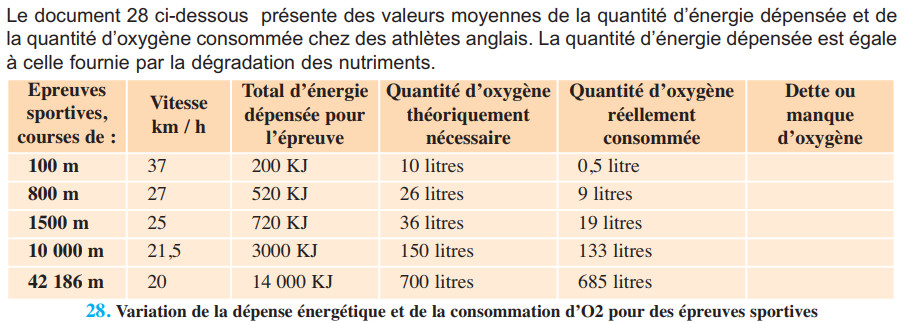
📷 Doc.28 — Tableau : Dépense énergétique, O₂ théorique, O₂ consommée et dette d'oxygène pour différentes courses (100m, 1500m, marathon) (p.87)
🔍 Dette d'oxygène : Après l'effort, le muscle consomme de l'O₂ pour transformer l'acide lactique accumulé en acide pyruvique, qui sera dégradé par la respiration.
✏️ Mini-quiz 5
1. La fermentation lactique produit .
2. La fermentation lactique se déroule .
📋 BILAN — Pages 88-89 (4 blocs)
1 La dégradation du glucose (p.88)
La respiration cellulaire est une . Elle fait intervenir des .
2 Glycolyse + devenir acide pyruvique (p.88-89)
La glycolyse a lieu dans le . Elle dégrade le glucose en . L'acide pyruvique entre dans la .
3 Chaîne respiratoire (p.89)
Au niveau des crêtes, l'O₂ est . L'H₂ est . La réaction finale : 2H⁺ + O²⁻ → .
4 ATP : phosphorylation oxydative (p.89)
Bilan par glucose : dont . Synthèse par .
📝 Exercices — Manuel p.90
✏️ Ex.1 — QCM du manuel (p.90)
1. Résultat respiration :
2. Phosphorylation =
3. Bilan respiration =
4. Cycle de Krebs :
5. Glycolyse :
6. Étape la + énergétique :
🧪 Ex.2 — Relation ADP / O₂ (p.90)
Des mitochondries isolées sont placées dans un milieu oxygéné riche en ions phosphates. On mesure le taux d'O₂ après addition d'ADP.
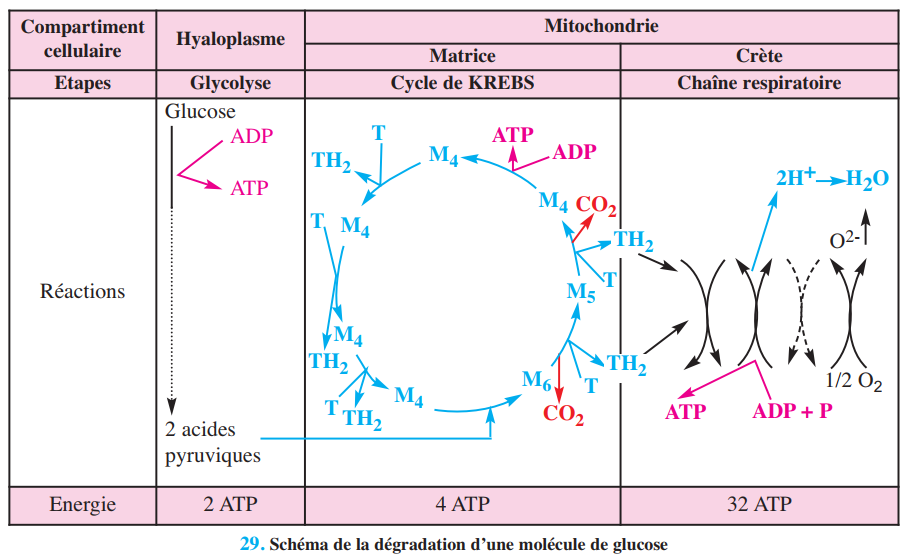
📷 Exercice 2 — Graphique montrant l'effet de l'ajout d'ADP sur la consommation d'O₂ par des mitochondries (p.90)
'">
L'ajout d'ADP .
📋 Bilan Révision — Vérifie chaque objectif
Exercice principal + bonus par objectif du programme.